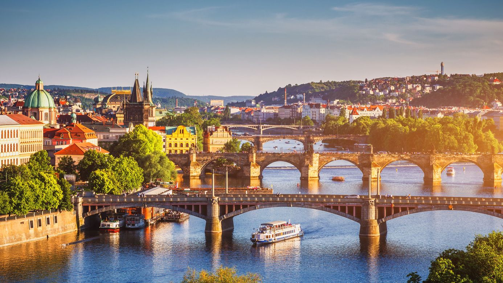
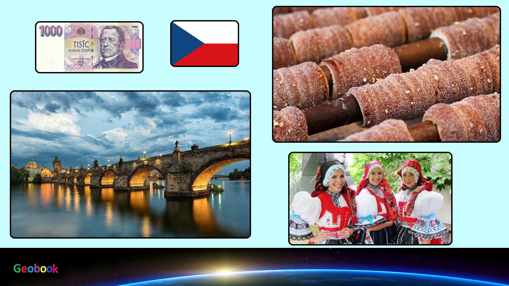

×

Czech
Климат
Климат Чехии умеренный, переходный от морского к континентальному. В целом климатические условия страны достаточно типичны для региона, с коротким, довольно жарким летом и относительно холодными для данной области зимами.
Летом средняя температура в центре страны колеблется в районе отметки +20°С, а в горных районах - +18°С. Зима прохладная (среднеянварская температура - от 0 до -5°С) и довольно влажная - в среднем за сезон выпадает до 500 мм осадков (в год - до 700 мм). Причем в силу небольших размеров страны разница в количестве осадков незначительна - на западе их больше из-за влияния Рудных гор, Чешского Леса и Шумавы, а на востоке сказывается влияние горных массивов Яворники, Карпаты и Фатра. Таким образом, сухого сезона как такового просто нет. Однако низменность вокруг Праги и южная Моравия чуть более теплы и получают меньше осадков.
____
